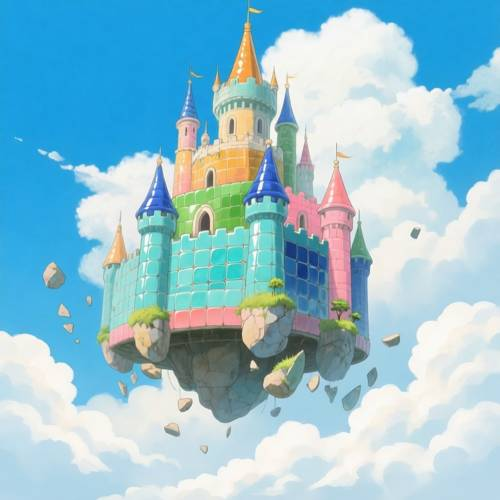
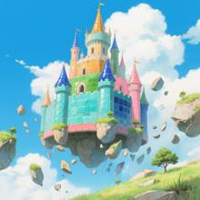

Attribute — In Hayao Miyazaki's animation style, a castle made of colored glazed t
In Hayao Miyazaki's animation style, a castle made of colored glazed tiles is suspended in the clouds. There is no moat around the castle, only floating stones.


Judge — Direct
- FAILAttribute - Material — The prompt requires the castle to be made of colored glazed tiles. In the image, the main structure of the castle is made of light-colored stone or plaster. The base of the floating island on which the castle sits is decorated with a band of multi-colored, glossy, square tiles, but the castle itself is not.
- FAILCompound - Feature Matching — The image shows a castle suspended in the clouds with floating stones around it, which matches part of the prompt. However, the castle is not made of colored glazed tiles as specified; only the foundation it rests on has this feature. Therefore, the compound requirement is not fully met.
- PASSStyle — The image successfully captures the requested Hayao Miyazaki animation style. The visual elements, such as the soft, puffy clouds, the whimsical design of the castle, the color palette with its vibrant blues and pastel tones, and the overall hand-drawn feel, are all characteristic of Studio Ghibli's aesthetic.
- FAILGrammar - Negation — The prompt explicitly states there should be "no moat around the castle". The image, however, clearly shows a channel of water encircling the base of the castle walls on the floating island, which constitutes a moat.
Judge — Continuum
- PASSAttribute - Material — The walls of the castle are depicted with a grid pattern, and the individual squares have a glossy sheen, consistent with the appearance of colored glazed tiles. The colors include aqua, green, pink, and yellow.
- PASSCompound - Feature Matching — The image features a castle that is visibly suspended in the sky among white clouds. Its walls are constructed from colorful, glossy tiles. Surrounding the base of the floating castle are numerous smaller rocks and pieces of earth that are also floating.
- PASSStyle — The image is rendered in an animation style strongly resembling that of Hayao Miyazaki. This is evident in the design of the whimsical, multi-turreted castle, the rendering of the voluminous and softly shaded clouds, and the overall bright and clean color palette, all of which are characteristic of Studio Ghibli's aesthetic.
- PASSGrammar - Negation — The castle is depicted floating in the sky. There is no ground surrounding it, and consequently, there is no moat or any body of water around its base.
What the agent did
Thinking
The user wants an image in Hayao Miyazaki's animation style: a castle made of colored glazed tiles suspended in the clouds, no moat, only floating stones around it. Key elements: 1. Miyazaki/Ghibli animation style (hand-painted, soft colors, whimsical) 2. Castle made of colored glazed tiles (colorful, shiny ceramic tiles - think Laputa-inspired but colorful glazed) 3. Suspended in the clouds (floating in sky, clouds around/below) 4. No moat around the castle 5. Floating stones (like floating rock fragments around the castle) I need to use qwen-image for generation per the benchmark policy. Let me craft a detailed visual prompt. Let me generate with a good detailed prompt covering all elements. Width/height — default 1024x1024. Maybe a portrait or landscape would be nice; the policy says sizes are controlled by the harness, so I should probably leave defaults. I'll just use default 1024x1024. Prompt: "Hayao Miyazaki Studio Ghibli anime style hand-painted illustration: a majestic castle built entirely of colorful glazed ceramic tiles — turquoise, amber, cobalt blue, emerald green, rose pink — shimmering in sunlight, floating high in a bright blue sky above and among fluffy white cumulus clouds. The castle has no moat; instead, chunks of floating rock and stone fragments hover in the air around it, some with grass growing on top. Soft watercolor sky, warm sunlight, whimsical, painterly, detailed anime background art." Let me generate.
Step 1 — `generate_image`
{
"prompt": "Hayao Miyazaki Studio Ghibli hand-painted anime style: a majestic castle built entirely of colorful glazed ceramic tiles \u2014 turquoise, amber, cobalt blue, emerald green, coral pink \u2014 the glossy tile walls and spires shimmering in warm sunlight. The castle floats high in a bright blue sky among fluffy white cumulus clouds, held aloft with no ground beneath. There is no moat; instead, many floating stones and broken rock fragments hover in the air around the castle, some with tufts of green grass and tiny trees growing on them. Soft watercolor sky, dreamy light, whimsical, painterly anime background art, highly detailed.",
"model": "qwen-image"
}Result img_0

Thinking
Let me look at the generated image critically: 1. Miyazaki/Ghibli style: Yes, the painterly anime style looks right — soft watercolor sky, hand-painted look, whimsical. 2. Castle made of colored glazed tiles: Yes! The castle walls clearly show colorful glazed tile blocks — turquoise, green, blue, pink, orange spires. This is well captured. 3. Suspended in the clouds: The castle floats in the sky with clouds around. However, there's a green hillside/landscape visible in the bottom right corner — the prompt says "suspended in the clouds," which implies it should be among clouds, not near a visible ground landscape. The bottom right shows a grassy hill with a tree, which grounds the scene somewhat. Hmm, is that a problem? The user said "suspended in the clouds" — a small bit of distant ground could arguably detract from the "floating high in clouds" feel. It might be better to remove the ground landscape so the castle is purely among clouds. 4. No moat: Correct, no moat. 5. Floating stones: Yes, many floating rock fragments with grass tufts around the castle. The main issue: the visible green hillside in the lower right/bottom edge. The user asked for a castle suspended in the clouds. A visible ground could weaken the "suspended in clouds" concept. I could edit it to replace the ground landscape with more clouds/sky. Also, the castle is sitting on a floating rock base which is fine and looks Miyazaki-esque (like Laputa). The floating stones are around it. Let me evaluate: overall the image is quite good. The one edit I'd consider: remove the grassy hillside at bottom right and bottom edge, replace with clouds and blue sky so the castle is fully surrounded by sky/clouds. Let me mark this as best first (it's a solid result), then attempt the edit to remove the ground. If the edit goes well, re-mark; if not, keep this. Actually, per the procedure: mark best as soon as I have something submittable. This is submittable. Then try the improvement edit. Edit prompt: "Replace the green grassy hillside and ground landscape at the bottom with fluffy white clouds and blue sky, so the castle floats entirely among the clouds with no ground visible." Let me do that with edit_image, model qwen-image.
Step 2 — `mark_best`
{
"image": "img_0",
"reason": "Strong first result: Ghibli-style painterly castle clearly built of colorful glazed tiles (turquoise, green, blue, pink, amber), floating among clouds with scattered floating stones and no moat."
}Thinking
Now the improvement edit: remove the grassy hillside/ground at the bottom and bottom-right so the castle floats purely among clouds.
Step 3 — `edit_image`
{
"image": "img_0",
"prompt": "Replace the green grassy hillside and ground landscape along the bottom edge and bottom-right corner with fluffy white cumulus clouds and soft blue sky, so the castle floats entirely high in the clouds with no ground visible anywhere.",
"model": null
}Result img_1
Thinking
The edit worked well. Now the castle is fully suspended in the clouds — the green hillside is gone, replaced by fluffy white clouds and blue sky. All requested elements: 1. Miyazaki style: ✓ painterly Ghibli aesthetic 2. Castle made of colored glazed tiles: ✓ clearly visible tile pattern in turquoise, green, blue, pink, orange 3. Suspended in the clouds: ✓ now fully among clouds, no ground 4. No moat: ✓ 5. Floating stones: ✓ rock fragments floating around This is better than img_0. Mark it as best. Everything the prompt asks for is present and correct. This is a good stop condition. Let me mark img_1 and stop.
Step 4 — `mark_best`
{
"image": "img_1",
"reason": "All prompt elements present and correct: Ghibli/Miyazaki painterly style, castle of colorful glazed tiles, fully suspended among clouds (no ground visible), no moat, floating stones surrounding it."
}Thinking
The image is complete and marked. I can stop now and summarize for the user.
Model
The image is complete and matches every element of your description: - **Miyazaki/Ghibli style** — soft hand-painted, watercolor-sky anime aesthetic with warm, whimsical light - **Castle of colored glazed tiles** — the walls and towers are clearly built from glossy glazed tiles in turquoise, emerald, cobalt blue, rose pink, and amber - **Suspended in the clouds** — the castle floats entirely in a bright blue sky, ringed by fluffy cumulus clouds with no ground in sight - **No moat** — instead, numerous floating stones and rock fragments drift in the air around the castle, some sprouting tufts of grass and tiny trees The final version is marked as the result.